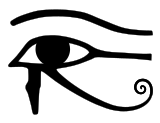

Warner Bros. Movie World
is a theme park on the Gold Coast in Queensland, Australia. It is owned and operated by Village Roadshow's Theme Parks division. After a star-studded opening ceremony on 2 June 1991, the park opened the following day. Many park attractions are based on Warner Bros. and related DC Comics properties, including thrill rides such as Batwing Spaceshot and Superman Escape, family attractions such as Justice League: Alien Invasion 3D and Wild West Falls Adventure Ride, entertainment at the Roxy Theatre and the Hollywood Stunt Driver live show. Film characters regularly roam the grounds to interact and take photos with guests. Each afternoon, characters participate in a parade along Main Street. The seasonal Fright Nights and White Christmas events are hosted annually. The park has survived financial hardships and remains among Australia's most popular tourist destinations. As of 2016, it receives a yearly average of 1.4 million visitors. (Full article...)
Recently featured:
Treaty of Lutatius ScorpionMAUD Committee ArchiveBy email More featured articles... that in Egyptian mythology, the god Horus offered his own eye (symbol pictured) to be eaten by his father Osiris?
... that Cuddles Marshall, the "handsomest twirler" on the New York Yankees, turned down a movie contract from Metro-Goldwyn-Mayer?
... that a man who threatened to blow up Alaska radio station KIAK unless he was put on the air was startled to find the station completely automated?
... that Kahe Te Rau-o-te-rangi swam seven miles (11 km) with her child strapped to her back, from Kapiti Island to the New Zealand mainland, to raise the alarm about an impending invasion?
... that hundreds of spectators gathered at a nearby church and club to watch 689 Fifth Avenue catch on fire?
... that although ballerina Cynthia Harvey spent most of her career with the American Ballet Theatre, she was also the first American principal dancer with the Royal Ballet in London?
... that Thurston Clarke felt that Harold Wilson should find it a "chilling thought" that The Chariot of Israel would be "cluttering library shelves" for years to come?
... that Kenneth Robinson, the second of three Robinsons to present Points of View between Robert Robinson and Anne Robinson, was fired from that programme for the frivolous way he described bananas?
In association football, the UEFA Champions League concludes with Chelsea (man of the match N'Golo Kanté pictured) defeating Manchester City in the final.
A mass grave containing the remains of 215 children is found at a former Kamloops school, part of the Canadian Indian residential school system.
Bashar al-Assad is re-elected as president of Syria
The district court of The Hague orders Royal Dutch Shell to cut its global carbon emissions by 45 per cent by the end of 2030.
June 2: Festa della Repubblica in Italy (1946)